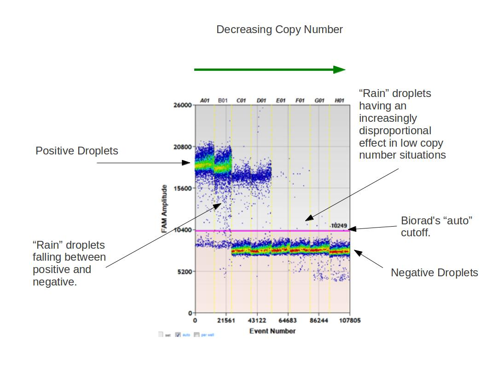
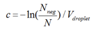

Defining The Rain
Automatically analysing BioRad's Digital Droplet PCR Output.
Digital Droplet PCR works on the premise of dividing a sample into small compartments or droplets, each containing a single molecule of interest. The droplet's flouresence is examined. If the flouresence reaches a cutoff the droplet is then defined as positive, if not it is defined as negative. The concentration within the sample as a whole is then calculated using the proportion of positive and negative droplets and Poisson statistics.
BioRad's Digital Droplet PCR machine has a problem with rain. This is not H2O falling from clouds but droplets that are not clearly defined as negative or positive. The Figures above indicate the problem.
This web page provides a JavaScript implementation of a clustering algorithm that uses BioRad's Digital Droplet output. This code can run in your web browser and avoids the need to send data to remote servers. It automatically classifies the droplets into positive and negative responses allowing to more accurately call low copy numbers. The source code and some test data is freely available from a software repository on Github under the MIT license.
Upload the positive control data to cluster and determine the cutoff to use.

How QuantiSoft defines a droplet as being either positive or negative is not explained in the user documentation. One of the objectives of definetherain is to clearly spell out how positive and negative droplets are defined.
Definetherain uses a positive control to define two clusters using the k-means algorithm. The cluster with lowest mean is the negative cluster and correspondingly the cluster with the higher mean is the positive cluster. Cutoffs from this control are then used to validate subsequent measurements. Valid droplets are defined as positive when the droplet has an amplitude that is > positive mean- 3 times the standard deviation of the positive cluster and negative when the amplitude is < negative cluster's mean+3 times the standard deviation of the negative cluster. Non valid droplets or
Working from the droplet amplitude files that are exported from the droplet analyser. The sample partitions are combined to make a final copy call per 20 μl. Example usage, is shown in this youtube screen cast.
This site has nothing to do with climatic conditions but is about optimising digital droplet PCR. However, you might be interested in what the weather is in Oxford.